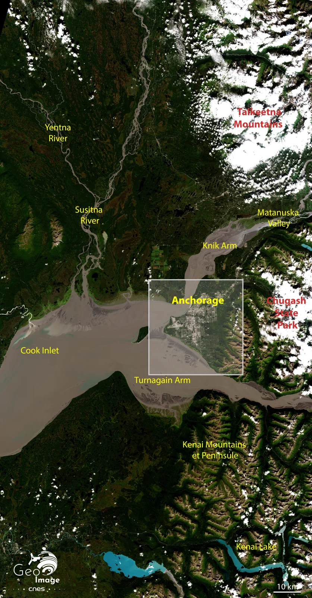
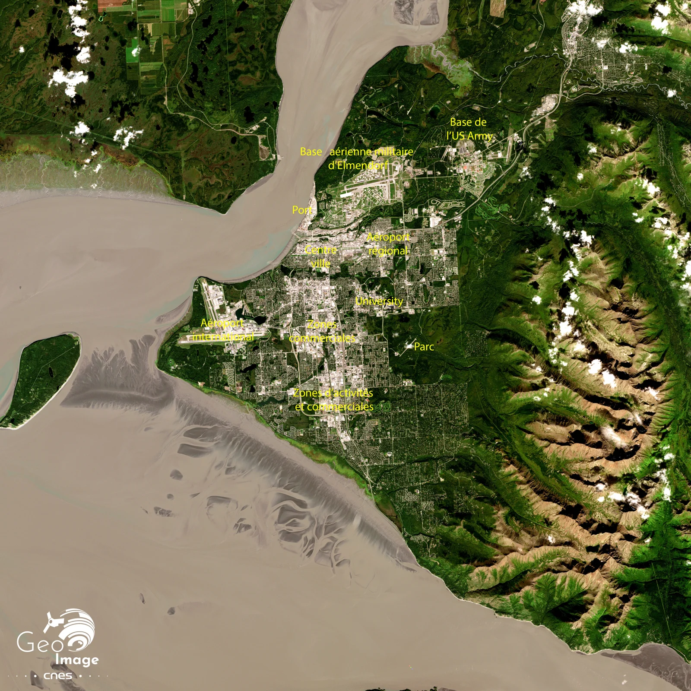

Avec 300 000 habitants à 61° de latitude nord, Anchorage est l’une des villes les plus importantes du monde arctique : un port de fond de fjord, un hub aérien et un bastion militaire.
Avec 300 000 habitants, Anchorage est une des villes les plus importantes du monde arctique en étant située à 61° de latitude nord. Son dynamisme repose sur un double privilège : au fond d’un puissant fjord situé au centre du littoral méridional de l’Alaska, elle est à l’interface entre l’immense et riche hinterland alaskaïen (pétrole du Grand Nord) et l’extérieur. Au plan géostratégique, elle est au cœur du système militaire étasunien dans le Grand Nord face à l’Arctique et à la Russie. Enfin, elle fut et demeure un relais majeur dans les liaisons entre l’Amérique du Nord et l’Asie de l’Est.

01Une situation exceptionnelle aux échelles régionale, nationale, continentale et mondiale
1.1Un cadre maritime exceptionnel : le Cook Inlet sur le golfe d’Alaska
L’image présente en position centrale une vaste étendue d’eau : c’est la terminaison du Cook Inlet, ou golfe de Cook. Venant du sud-ouest depuis le golfe d’Alaska et l’océan Pacifique, ce grand golfe marin s’enfonce de 288 km à l’intérieur des terres. Il est encadré par deux hautes chaînes de montagnes qui tombent dans la mer : à l’ouest les Chigmit Mountains (Mount Redoubt, 3 100 m) et à l’est les hauteurs de la péninsule de Seward.
On observe facilement sur l’image, en particulier au sud, les surfaces d’estran dégagées à marée basse. Du fait de sa forme étroite en entonnoir et de sa longueur, le jeu des marées y est exceptionnel : le marnage, qui mesure la différence de niveau entre marée haute et marée basse, atteint 10 m dans le Turnagain Arm, un phénomène que l’on retrouve par exemple dans la baie de Fundy, sur la côte est du Canada. Dans le Cook Inlet, la marée montante provoque parfois un puissant mascaret et les courants marins sont forts. On doit aussi relever la puissance des processus sédimentaires et l’importance des vasières.
Anchorage est donc une ville littorale, et la photo est prise à marée basse. À l’échelle de l’Alaska, elle dispose d’un véritable privilège : alors que le littoral méridional de l’État fédéré est démesurément long, de la presqu’île des Aléoutiennes à l’ouest aux frontières du Canada à l’est, elle se trouve géographiquement quasiment au milieu. Elle est en position beaucoup plus centrale que la capitale politique de l’État, Juneau, qui n’est accessible qu’en bateau ou en avion et se situe très en marge, au sud-est. À l’échelle continentale et mondiale, elle dispose d’un autre privilège majeur : toute la façade maritime méridionale de l’Alaska est réchauffée par les eaux de la dérive nord-pacifique.
1.2Un site à la convergence de deux grandes vallées
Cette ville littorale ne se serait sans doute pas autant développée si son site ne lui assurait un second privilège : il se trouve à la convergence de deux grandes vallées drainant et organisant tout l’hinterland alaskaïen, un État fédéré qui couvre 1,7 million de km², soit trois fois la France à lui seul.
Au centre droit de l’image, lorsqu’on le remonte vers l’amont, le Cook Inlet aboutit à deux bras de mer et, au bout de ceux-ci, à deux grandes vallées. Au sud se trouve le Turnagain Arm, long de 65 km, qui apparaît pour partie comme un large fjord plus ou moins envasé : cette vallée relie la région d’Anchorage à la ville portuaire de Seward, dans la péninsule du même nom. Au nord se trouve le Knik Arm, long de 25 km, au bout duquel se situe la petite ville de Palmer. De là partent deux grands axes terrestres vers le Nord et le Grand Nord.
Vers le nord-est, la grande Matanuska Valley s’oriente vers les villes de Glennallen et Tok pour se brancher sur le grand axe topographique et logistique qui organise la partie centre-orientale de la région, entre Whitehorse (Canada) et Delta Junction, puis Fairbanks. Vers le nord-ouest se déploie la fameuse Broad Pass, qui se faufile entre le massif du Mont McKinley (6 194 m, point culminant des États-Unis) et le Mont Hayes (4 216 m). Cet axe routier et ferroviaire relie Anchorage à Fairbanks, la seconde ville de l’Alaska. Beaucoup plus au nord, le North Slope, large bande littorale qui borde la mer de Beaufort et donc l’océan Arctique, abrite les grands champs d’hydrocarbures de Prudhoe Bay.
1.3Un site maritime d’abri au pied de hautes montagnes littorales
Au centre de l’image, sur une pointe précédée d’une petite île bien visible, s’étend une petite plaine littorale à l’embouchure de la Ship Creek, à 31 m d’altitude : c’est là que se déploie l’agglomération. Cette position d’abri explique qu’Anchorage bénéficie, dans une région de hautes terres au climat subarctique, d’influences maritimes modératrices. La température annuelle moyenne est de 2,1 °C (de – 11 °C à – 13 °C en décembre, janvier et février) et les précipitations atteignent 400 mm par an. Pour autant, les coups de froid peuvent être terribles (moyenne de – 39 °C en février 1999).
Ce climat maritime d’abri vient compenser les effets de la haute latitude. Située à 61°13′ de latitude nord, Anchorage est de loin la plus grande ville la plus septentrionale de tout le continent américain. À l’échelle mondiale, elle est un peu plus au nord que Saint-Pétersbourg (59°56′ N) en Russie, mais moins que Reykjavik (64°08′) en Islande, là encore deux villes littorales.
Au nord de l’image se trouvent, à l’est, les Talkeetna Mountains et, à l’ouest, la Susitna River. Sa vaste vallée, avec la Yentna River, occupe tout le quart nord-ouest de l’image. Longue de 500 km, elle a un débit puissant (15e rang des États-Unis) et est largement alimentée par le glacier Sustina, de l’Alaska Range, dominée par le Denali (aussi appelé Mont McKinley, 6 109 m), point culminant des États-Unis. Au centre, la ville s’appuie sur les premiers chaînons des Chugach Mountains, vaste chaîne littorale couverte d’une calotte qui alimente un important appareil glaciaire. Cette présence explique la proximité de la ville et de ses habitants avec la grande faune sauvage (ours bruns, grizzlis, orignaux, loups, renards), que l’on peut parfois apercevoir à proximité immédiate.
1.4Des contraintes sismiques et volcaniques fortes
Le reste de l’image est occupé par des espaces montagnards très jeunes. Le site présente de forts risques sismiques du fait de la jeunesse et de l’activité de ces puissantes chaînes, liées à une tectonique des plaques particulièrement active sur tout le littoral ouest-américain (la « ceinture de feu » du Pacifique).
Le 27 mars 1964, Anchorage fut ravagée par un tremblement de terre de magnitude exceptionnelle (9,2), qui provoqua 115 morts. Les règlements d’urbanisme y limitent depuis la hauteur des bâtiments à 21 étages, ce qui explique un centre-ville au profil relativement bas par rapport aux autres grandes villes nord-américaines. De même, l’agglomération est parfois couverte par un nuage et une pellicule de cendres du fait de la présence de volcans très actifs (éruptions du Mount Spurr en août 1992, du Mount Redoubt en avril 2009).
02Une interface géoéconomique et géostratégique entre États-Unis, Russie et Asie de l’Est
Sur l’image, la ville est dotée de deux importants aéroports dont la présence s’explique par son rôle d’interface entre les États-Unis, la Russie et l’Asie de l’Est. De par sa position géographique, l’Alaska est un bastion avancé du Mainland étasunien vers le Nord et le Nord-Est.
2.1Elmendorf-Richardson et le système NORAD
Au nord de l’agglomération se trouve la très importante base militaire d’Elmendorf-Richardson. Elle réunit depuis 2010 dans un même ensemble de gestion deux entités différentes mais complémentaires : la base aérienne d’Elmendorf de l’US Air Force et la base de Fort Richardson de l’US Army. On y trouve le commandement des forces militaires en Alaska, l’Alaska Command, qui compte au total 20 000 hommes, ainsi que le commandement de l’Alaska NORAD Region, une des trois régions du système NORAD.
Ce système couvre, avec ses stations radars, ses bases et ses postes avancés dans le Grand Nord, tout l’espace arctique, en coordination étroite avec le Canada. Ce système de contrôle et d’alerte joue depuis la guerre froide un rôle déterminant dans la défense du territoire des États-Unis, en particulier face à une possible attaque nucléaire de la Russie, mais peut-être aussi dans le contrôle des opérations de la Chine et de la Corée du Nord.
2.2L’aéroport Ted Stevens, relais entre l’Asie et les Amériques
Au sud-ouest de l’agglomération, sur la pointe avancée, se trouve l’aéroport international civil Ted Stevens, à 8 km du centre-ville. Doté de trois pistes, il accueille 5 millions de passagers par an. Il a ouvert en décembre 1951, au moment du développement des grands vols transpacifiques entre les États-Unis et l’Asie, car il servait alors d’escale du fait de l’autonomie limitée en carburant des appareils de l’époque.
Cette fonction d’escale a aujourd’hui disparu, les avions pouvant réaliser des vols directs à très longue distance, mais la fonction d’interface demeure : l’aéroport sert de hub continental de redistribution entre l’Asie et les Amériques à deux grandes compagnies étasuniennes de fret aérien, FedEx et UPS Airlines. FedEx y dispose par exemple d’un centre de tri qui emploie environ 1 200 salariés.
03Zoom : la ville d’Anchorage, plus grande ville de l’Arctique étasunien

La métropole écrase toute la hiérarchie urbaine de l’Alaska, tant sur le plan démographique qu’économique, laissant loin derrière Juneau et Fairbanks, les deux autres villes importantes. On peut parler d’une structure urbaine macrocéphale : Fairbanks compte 33 000 habitants (97 000 avec son agglomération) et Juneau 32 000 habitants (100 000 avec son agglomération).
Fondée seulement en 1914, elle est au départ un simple mouillage portuaire pour soutenir la construction de l’Alaska Railroad. Elle devient ensuite une halte sur la voie ferrée qui relie le port de Seward, au sud-est, aux mines de charbon du nord de la chaîne d’Alaska. Avec 4 420 km², le territoire de la commune couvre une large partie de l’image : c’est une des communes les plus étendues des États-Unis.
La ville compte aujourd’hui 294 356 habitants et son aire métropolitaine 401 499, en incorporant la vallée de la Matanuska-Susitna. Cette petite péninsule triangulaire polarise donc 41 % de la population de l’Alaska (et plus de la moitié, 54 %, avec sa région métropolitaine), un État de 1,7 million de km² qui ne compte que 737 400 habitants, soit une densité de 0,43 hab./km². Nous sommes aux marges de l’immense désert glacé des hautes latitudes polaires, dont la mise en valeur repose sur des isolats spécialisés reliés en chapelets par des réseaux logistiques (routes, voies ferrées, oléoducs) qui drainent les richesses vers la côte méridionale pour l’exportation (cf. le port de Valdez pour les hydrocarbures, plus à l’est).
Le centre-ville, ou downtown, accueille de nombreuses fonctions de commandement. Politique, puisque face à la marginalisation de la capitale officielle de l’État, Juneau, Anchorage compte plus d’emplois administratifs fédéraux. Économique, avec les sièges régionaux de grands groupes bancaires et financiers d’un côté, pétroliers de l’autre. Comme en témoignent les nombreuses zones commerciales et d’activité de la zone centrale, on y trouve aussi tous les services de la reproduction sociale (santé, université, commerce) et les fonctions productives et périproductives nécessaires à la mise en valeur de l’Alaska (recherche, audit, conseil, juridique, fourniture d’équipements, maintenance et réparation).
La ville, son économie et son urbanisation reposent historiquement sur des économies de cycles, qui expliquent des phases successives de boom ou de déclin relatif. L’Alaska est rachetée par les États-Unis à la Russie en 1867, n’intègre les États-Unis comme « territoire » qu’en 1912 et n’entre dans l’Union comme État fédéré qu’en 1959. À l’image de ces mutations institutionnelles, Anchorage n’est en 1940 qu’une petite bourgade de 3 000 habitants. La Seconde Guerre mondiale et l’attaque japonaise de Pearl Harbor font prendre conscience à Washington du rôle géostratégique de l’Alaska, processus renforcé par la guerre froide : portée par les fonctions militaires, la ville atteint 47 000 habitants en 1951. À partir des années 1960, l’économie est dopée par les cycles des hydrocarbures, avec la découverte du pétrole à Prudhoe Bay, dans le Grand Nord, en 1964.
Les espaces résidentiels sont largement structurés par un habitat de lotissements pavillonnaires, aux formes bien identifiables, qui occupe l’ouest et l’est de l’agglomération. Au sud-est se déploient de nouveaux quartiers résidentiels aux densités plus faibles, alors qu’au nord-est la périurbanisation est guidée par le grand axe autoroutier.
Au nord-est enfin, les deux bases militaires sont bien identifiables et constituent deux complexes urbains séparés. À l’ouest, en bordure de l’eau, se déploie l’Elmendorf Air Force Base, ouverte en 1940 : on reconnaît facilement les pistes, les bâtiments de commandement, de maintenance et de réparation, les dépôts de matériels et les services. À l’est, au nord de l’autoroute, se trouve la base de l’US Army (toits orangés). Ces fonctions militaires représentent entre 8 000 et 10 000 emplois et 10 % de la population totale de la ville avec les familles.